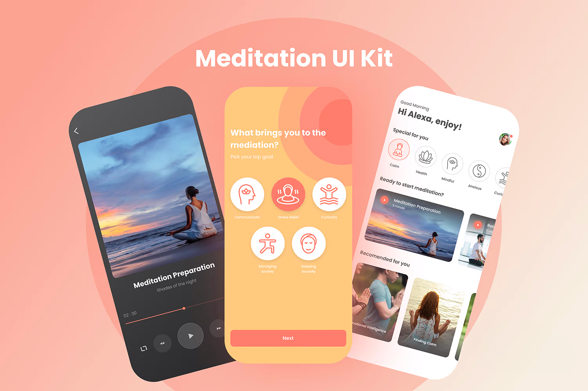

Bogotá, Colombia 9:00 AM
Introduction
Audiovisual Direction
& Motion Graphics
Audiovisual creator with experience directing and producing content
for personal brands, startups, and companies.
for personal brands, startups, and companies.
About Me
Directing Stories That Connect With Audiences
I combine motion graphics, 3D modeling, VFX compositing, web design, and graphic design to create visually impactful projects that connect with audiences and strengthen the digital presence of brands and projects.
Tech Stack
After Effects
Audition
Photoshop
Lightroom
Illustrator
Premiere Pro
Creative Cloud
DaVinci Resolve
Pro Tools
Nuke
CapCut
Blender
Figma
Canva
Claude
Gemini
Higgsfield
Works
My Services
Audiovisual Direction
(01)
Short Films & Corporate Video
Team Direction (Pre/Prod/Post)
Creative Direction for Advertising


Post-Production
(02)
Editing & Color Grading
Sound Design & Recording
VFX Compositing


Motion & 3D
(03)
Motion Graphics 2D/3D
3D Modeling
AI-Assisted Content


Digital & Content Design
(04)
Web/UI Design
Graphic Design
Social Media & Community Management


Contact